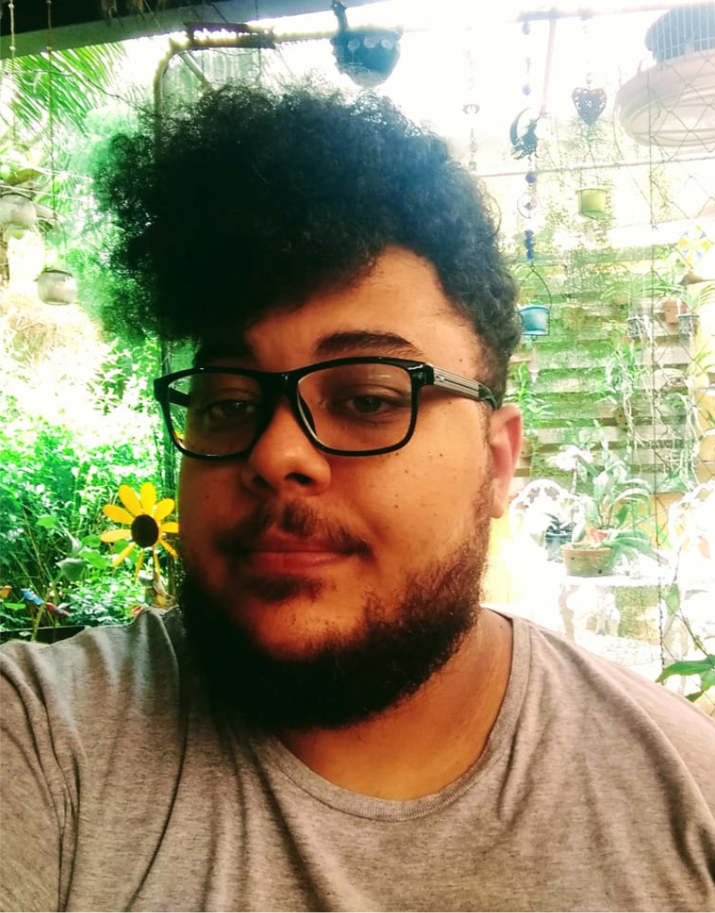
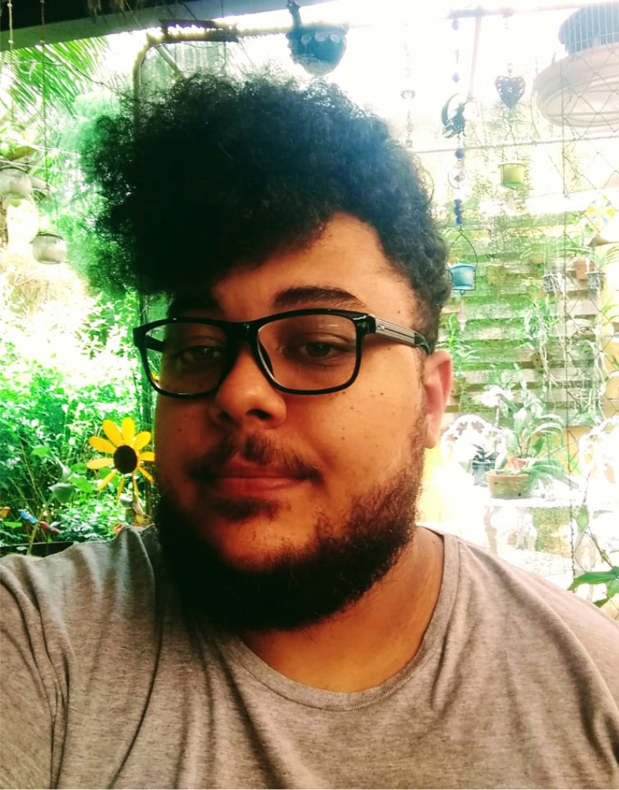
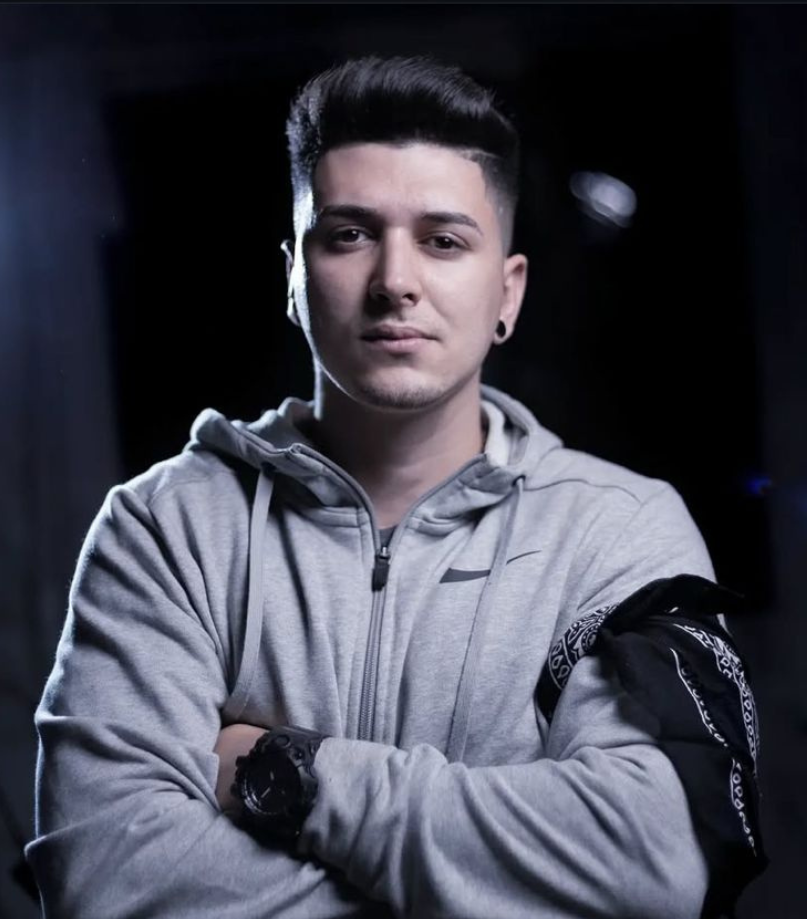
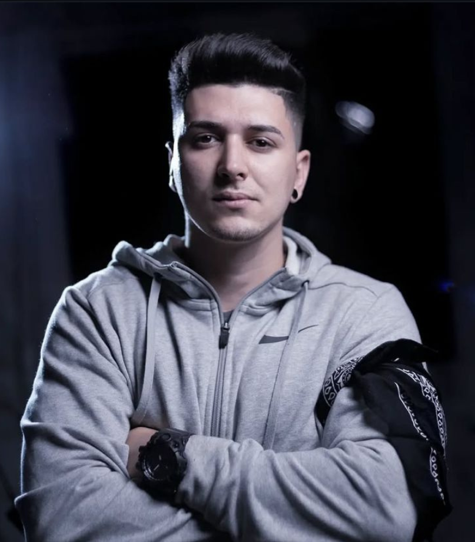

Formado em Comunicação Social - Publicidade e Propaganda, iniciou sua trajetória no universo audiovisual em 2015, através de um projeto social do Colégio Estadual Dr. João Maia. Desde então, se apaixonou pela área e foi se destacando no meio, até que em 2016 recebeu o reconhecimento de ''Jovem Destaque'', da Câmara Municipal de Resende.
Ainda na faculdade de Comunicação Social, conquistou por 2 anos seguidos o prêmio ''Talentos da Publicidade'' na categoria estudante, realizado pela TV Rio Sul, afiliada da Rede Globo (2021/22 e 2022/23).
Atualmente, toca a D7 LAB no município de Resende, atendendo também os mercados da região, Rio de Janeiro e São Paulo, tendo em seu currículo trabalhos com celebridades como Valeska Bruzzi, Maíra Cardi e Pedro Sampaio.

 



 
